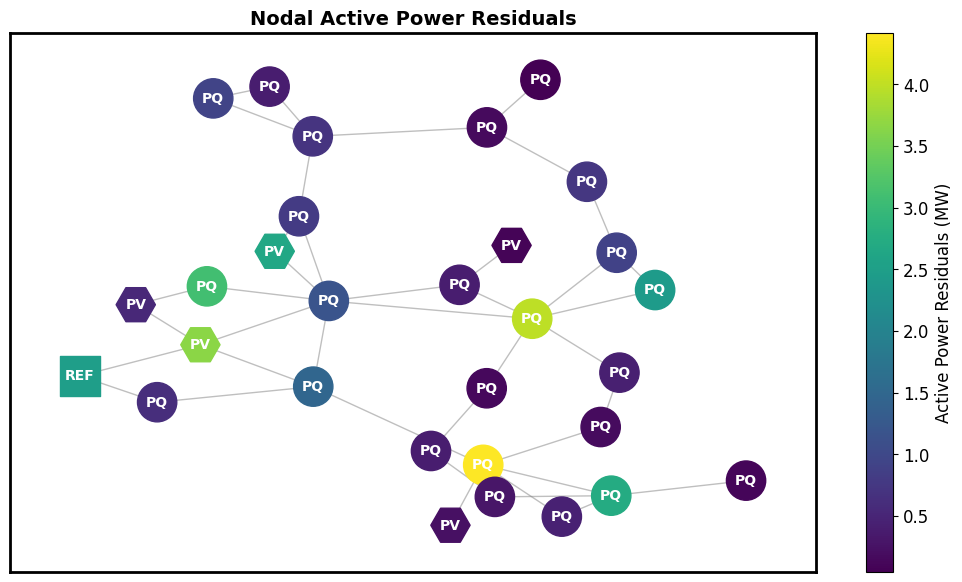
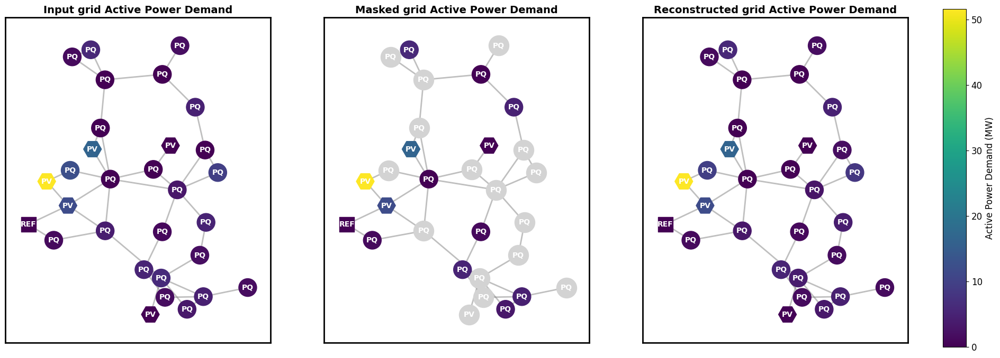
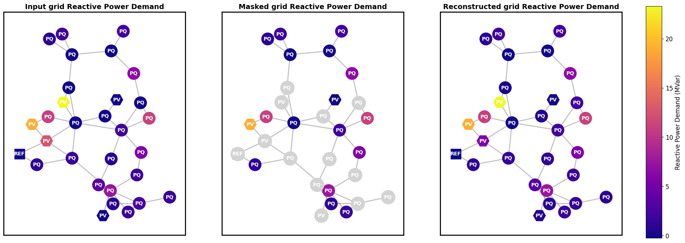
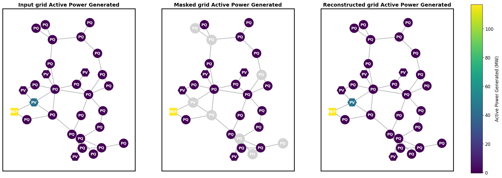
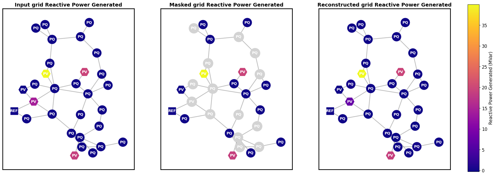
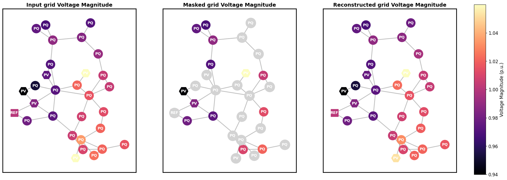

Visualizing predictions of GridFM¶
from gridfm_graphkit.datasets.powergrid import GridDatasetMem
from gridfm_graphkit.datasets.data_normalization import BaseMVANormalizer
from gridfm_graphkit.utils.visualization import visualize_error, visualize_quantity_heatmap
from gridfm_graphkit.datasets.globals import PD, QD, PG, QG, VM, VA
from gridfm_graphkit.datasets.transforms import AddRandomMask
# Standard open-source libraries
import torch
from torch_geometric.loader import DataLoader
import matplotlib.pyplot as plt
from tqdm import tqdm
import time
import random
torch.manual_seed(0)
random.seed(0)
device = torch.device("cuda" if torch.cuda.is_available() else "cpu")
Load and normalize the power grid dataset for grid case30 from IEEE¶
# This network was chosen for visualization purposes (networks up to 300 buses were tested)
# The number of load scenarios is 1024
network = "../data/case30_ieee"
node_normalizer, edge_normalizer = (
BaseMVANormalizer(node_data=True),
BaseMVANormalizer(node_data=False),
)
dataset = GridDatasetMem(
root=network,
norm_method="baseMVAnorm",
node_normalizer=node_normalizer,
edge_normalizer=edge_normalizer,
pe_dim=20,
transform=AddRandomMask(mask_dim=6, mask_ratio=0.5),
)
Create a Pytorch dataloader¶
# The scenarios are grouped in batches
loader = DataLoader(dataset, batch_size=32)
Load gridFM-v0.2¶
model = torch.load("../models/GridFM_v0_2_3.pth", weights_only=False, map_location=device).to(device)
State reconstruction of 1024 scenarios (6 features)¶
model.eval()
with torch.no_grad():
for batch in tqdm(loader):
batch = batch.to(device)
# Apply random masking
mask_value_expanded = model.mask_value.expand(batch.x.shape[0], -1)
batch.x[:, : batch.mask.shape[1]][batch.mask] = mask_value_expanded[batch.mask]
# Perform inference
output = model(
batch.x, batch.pe, batch.edge_index, batch.edge_attr, batch.batch
)
Visualize nodal active power residuals for one load scenario¶
# select one random sample from the dataset
data_point = dataset[random.randint(0, len(dataset) - 1)]
visualize_error(data_point, model, baseMVA=node_normalizer.baseMVA, device=device)

Visualize the state reconstruction capability of gridFM-v0.2 for each feature:¶
- Active Power Demand (MW)
- Reactive Power Demand (MVar)
- Active Power Generated (MW)
- Reactive Power Generated (MVar)
- Voltage Magnitude (p.u.)
- Voltage Angle (degrees)
# Active power demand reconstruction
visualize_quantity_heatmap(
data_point,
model,
PD,
"Active Power Demand",
"MW",
node_normalizer,
plt.cm.viridis,
device=device,
)

# Reactive power demand reconstruction
visualize_quantity_heatmap(
data_point,
model,
QD,
"Reactive Power Demand",
"MVar",
node_normalizer,
plt.cm.plasma,
device=device,
)

# Active power generated reconstruction
visualize_quantity_heatmap(
data_point,
model,
PG,
"Active Power Generated",
"MW",
node_normalizer,
plt.cm.viridis,
device=device,
)

# Reactive power generated reconstruction
visualize_quantity_heatmap(
data_point,
model,
QG,
"Reactive Power Generated",
"MVar",
node_normalizer,
plt.cm.plasma,
device=device,
)

# Voltage magnitude reconstruction
visualize_quantity_heatmap(
data_point,
model,
VM,
"Voltage Magnitude",
"p.u.",
node_normalizer,
plt.cm.magma,
device=device,
)

# Voltage angle reconstruction
visualize_quantity_heatmap(
data_point,
model,
VA,
"Voltage Angle",
"degrees",
node_normalizer,
plt.cm.inferno,
device=device,
)